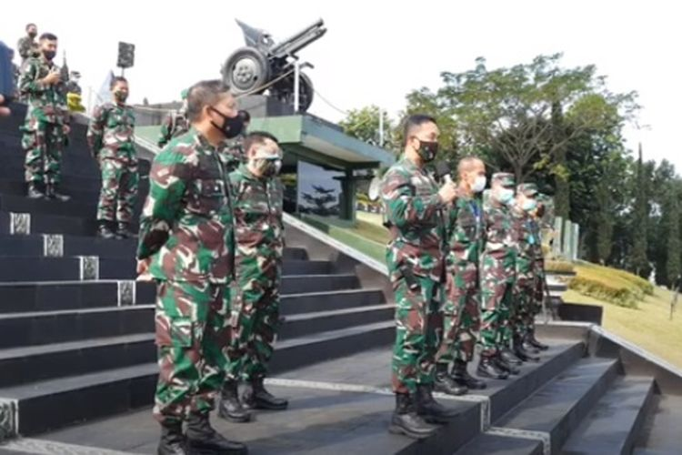

Melacak Penyebaran Covid-19 di Secapa AD, 1.280 Orang Positif Corona, Terungkap Saat Prajurit Periksa Bisul
KOMPAS.com - Ribuan orang di Sekolah Calon Perwira Angkatan Darat ( Secapa AD) Kota Bandung, terinfeksi virus corona. Akibat tingginya penularan virus tersebut, Secapa AD ditetapkan sebagai klaster baru di Jawa Barat. Menyikapi laporan itu, bahkan Mabes TNI langsung turun tangan untuk mengambil alih penanganan corona di sekolah calon perwira tersebut. Ribuan alat rapid test dan swab test langsung dikirimkan dari Jakarta. Seluruh anggota yang berada di lokasi tersebut langsung dilakukan pemeriksaan untuk memutus rantai penularan virus
Kepala Staf Angkatan Darat, Jenderal TNI Andika Perkasa mengatakan, terungkapnya kasus penyebaran corona di Secapa AD berawal saat dua prajuritnya pergi ke rumah sakit untuk berobat. Mereka yang periksa itu awalnya juga tidak menduga tertular Covid-19. Pasalnya, yang mereka keluhkan saat itu hanya infeksi bisul dan masalah tulang belakang. Terlebih lagi, selama ini tidak pernah mengeluhkan sesak napas maupun batuk, pilek. "Jadi tepatnya dua pekan lalu adalah laporan pertama dari komandan Sekolah Calon Perwira Angkatan Darat kepada saya hari Sabtu juga. Diawali dari ketidaksengajaan sebenarnya. Jadi ada dua prajurit atau perwira siswa yang berobat ke Rumah Sakit Dustira. Rumah Sakit Dustira itu adalah rumah sakit Angkatan Darat terbesar di Jabar, ada di kota ini," ujar Andika saat konferensi pers di Makodam III/Siliwangi, Kota Bandung, Sabtu (11/7/2020)
"Yang satu keluhan karena bisul, berarti demam karena adanya infeksi dan satu lagi masalah tulang belakang. Tapi ternyata mereka diswab dan positif," kata Andika menambahkan.
Lakukan rapid test massal Mendapat laporan itu, Andika langsung memerintahkan seluruh anggotanya di Secapa AD tersebut untuk dilakukan pemeriksaan. Sebanyak 1.400 alat rapid test juga langsung dikirim dari Jakarta. Termasuk dengan alat untuk swab test. Dari pemeriksaan rapid test yang dilakukan, saat itu diketahui ada sebanyak 187 orang hasilnya reaktif. Untuk memastikannya, mereka langsung dilakukan swab test. "Dari situ kita ingin yakinkan, kita lakukan swab. Saya kirim VTM kepada Kakesdam. VTM itu adalah alat untuk swab. Nah, saya kirim kemudian dilakukan swab, dilakukan tes di laboratorium PCR dari situlah akhirnya ditemukan," ujar dia. Setelah pemeriksaan terus dilakukan, data terbaru ada sebanyak 1.280 orang di Secapa AD terkonfirmasi positif Covid-19. Dari jumlah itu, terdiri dari 991 perwira siswa, 289 staf atau anggota, serta keluarga dari Secapa AD.
Meski jumlah orang yang terkonfirmasi positif corona mencapai ribuan orang, namun Andika mengatakan rata-rata tidak mengeluhkan sakit atau berstatus orang tanpa gejala (OTG). Hal itu dipastikannya saat melakukan kunjungan untuk memantau kondisi mereka, kemarin. "Saya tanya satu persatu, saya ambil tiga random dan tidak ada koordinasi sama sekali. Saya tanya 'apa yang dirasakan sebenarnya? Yang dirasakan sama sekali tidak ada," kata Andika. Dari total 1.280 orang yang terkonfirmasi positif itu, lanjut Andika, hanya 17 orang yang saat ini dirawat di rumah sakit. Selebihnya menjalani karantina di Secapa AD. "Per hari ini masih ada 17 yang dirawat di Rumah Sakit Dustira, selebihnya berada di Secapa. Dari 17 itu satu sudah negatif dan 16 yang masih positif, tapi semuanya sudah tidak merasakan gejala apa pun juga. Yang satu negatif tetap di sana karena memang masalah TBC atau paru-paru," jelas Andika